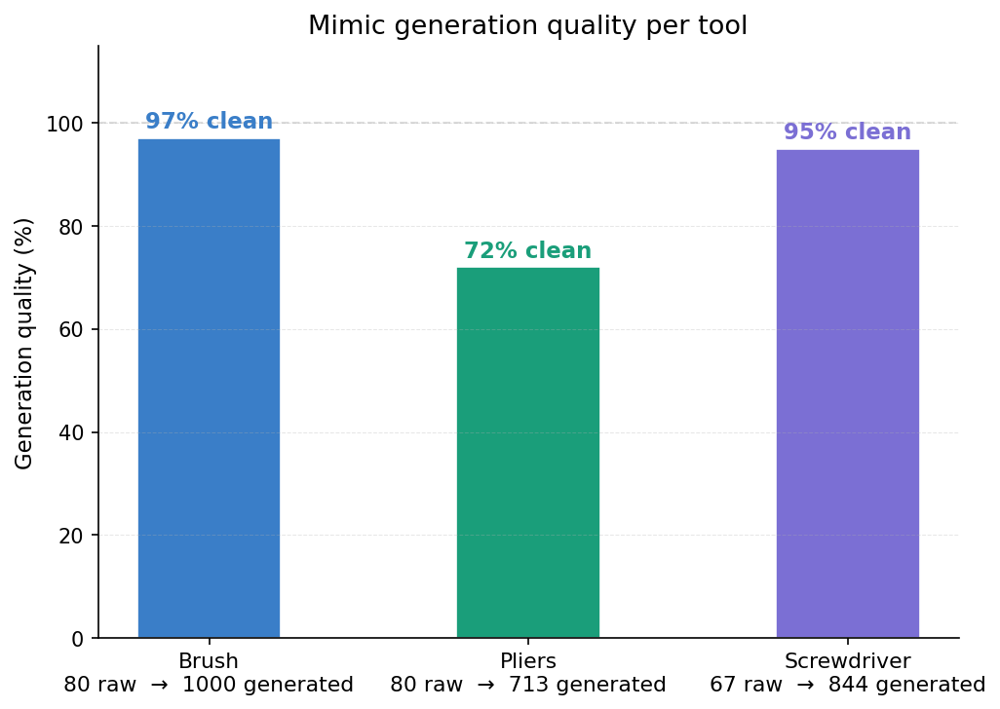
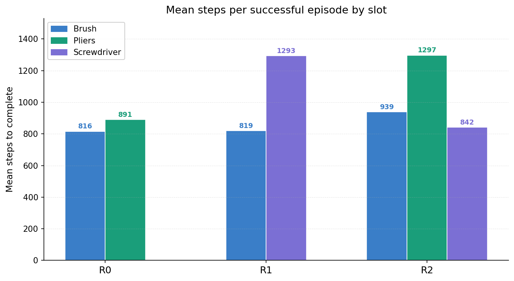

AIR2 Manipulation
This was a university group project to get a Franka arm finding and sorting tools on a pegboard using AI end to end. A CNN figures out where each tool actually is, and a trained policy per tool figures out how to grab it and carry it to a basket. I trained the segmentation CNN, built and tuned the policy training pipeline including the fix that let a policy learn approach and carry as separate behaviors instead of blending both, and used Isaac Lab's Mimic tool to turn a handful of human demos into the data those models trained on, porting that whole pipeline from a teammate's Windows-only setup to Linux along the way.
The brush policy reaching three different pegboard slots, evaluated back to back.
What it does now
The finished system takes a camera image of a pegboard holding three small tools, a paintbrush, pliers, and a screwdriver, and works out which ones are there and where. A U-Net segmentation model finds each tool's pixels, and depth plus camera intrinsics turn that into a 3D position for each one. A small per-tool policy then drives the Franka arm through reach, grasp, and carry, and an orchestrator runs through the detected tools closest to the basket first.
I trained the segmentation model myself, reaching 0.919 mean IoU on the tool classes with a U-Net backbone, after collecting and cleaning the training frames and fixing a bug where the model's world-space position output was always empty. On the reinforcement learning side I redesigned the reward function the arm was trained against, adding penalties for dropping a grasped tool or losing the grasp entirely, across nine reward terms in total.
The policies that actually run in the final demo came from Isaac Lab's Mimic pipeline rather than reinforcement learning. You record a handful of human demonstrations by teleoperating the arm, Mimic replays and randomizes them into hundreds of synthetic trajectories, and a small MLP is trained on those trajectories through behavior cloning. I ported this whole pipeline from a teammate's Windows-only setup to Linux, fixing several Isaac Lab API differences along the way, then found and fixed the reason the trained policies could approach a tool but not carry it. I also fixed a separate generalization problem where policies memorized the exact slot position they were trained on instead of the underlying reach and grasp behavior. In the final evaluation runs, the brush and pliers policies reached the basket in all 15 of 15 episodes each, and the screwdriver policy reached it in 11 of 15.

Mimic-generated demo quality per tool, from the same handful of human demos each.

Pass/fail counts per tool across the three generalization fix checkpoints (R0 to R2).

Mean steps per successful episode, same checkpoints.
I also built a diffusion policy as a second imitation learning approach alongside behavior cloning, an MLP noise predictor with FiLM conditioning trained with a cosine DDPM schedule and sampled with DDIM, reusing the same frozen visual encoder as the behavior cloning pipeline.
Timeline
- Franka pegboard tasks and hook randomization set up, with pick and place cameras.
- Added VR hand tracking teleop for the Franka arm, plus a recording pipeline for demos.
- Built per-object pick tasks for all three tools, each with its own 60 second episode.
- Fixed camera and asset path portability issues so the project ran cleanly on a fresh machine.
- Merged in a teammate's segmentation and goal-conditioned behavior cloning pipeline from a separate branch.
- Repo cleanup and task rename, discovered the arm had been a Franka all along rather than a UR3e.
- Trained the U-Net segmentation model to 0.919 tool mIoU, fixed the world position bug, and finished the nine-term reward redesign.
- Diagnosed why a teammate's visual behavior cloning checkpoint never attempted a grasp, and fixed the eval script's basket-reached metric.
- Built a diffusion policy as a second imitation learning approach.
- Built the Mimic to behavior cloning pipeline, and ported it from Windows to Linux.
- Set up PPO warm starting from a behavior cloning checkpoint, porting it for a newer RL library version.
- Found and fixed the observation frame mismatch that was limiting the policy to a narrow set of starting poses.
- Added phase conditioning so trained policies could carry a tool, not just approach it.
- Fixed a generalization bug where policies memorized training slot positions instead of the underlying task.
- Built the first version of the sequential multi-tool evaluation pipeline.
- Teammates extended that pipeline into the finished CNN driven three-tool pick and place demo.
Difficulties
A borrowed policy that never touched a tool
A teammate handed off a trained visual behavior cloning checkpoint that looked complete but never picked anything up in practice. Running it showed the arm drove straight toward the basket every time and the gripper never closed, as if it had memorized the destination and skipped the middle of the task entirely. Digging into how it was trained turned up two problems at once, it had been trained on camera footage from a different camera position than the one actually running, and it had no segmentation encoder feeding it useful visual features. Between the two, the pick phase of the task had nothing meaningful to learn from, so it never learned it.
Porting Mimic from Windows to Linux
A teammate had built the Mimic demo collection and generation pipeline on Windows, and porting it to Linux surfaced a run of small but blocking API mismatches, one after another. The environment's device had to be read through an extra wrapper layer that only exists on Linux, the teleop step that used to return separate pose and gripper values now returned a single combined tensor, an export step had to run before an episode could be added to the dataset, and the end effector frame itself had a different name in the newer environment version. None of these had an obvious single cause, each one only showed up once the previous one was fixed, so it took working through the pipeline one error at a time rather than assuming it was broken in one place.
Object position and target position in different frames
The trained behavior cloning policy worked when the arm started from roughly the pose it was trained on and fell apart everywhere else. Tracing it back, the policy's observations left out the end effector's own position and rotation entirely, so the only way it could infer where the gripper was in space was by reasoning backward from joint angles, and on top of that, the object's position and the basket's position were recorded in two different coordinate frames, one relative to the robot's base and one in world space, so there was no consistent direction the network could learn from one to the other. Fixed by adding the end effector's position and rotation to the observations directly and retraining.
A policy that could approach but not carry
Training the gripper itself didn't work the way it should have first. The demos label it as a plain plus one or minus one signal, but training it with the same loss as the rest of the action space just taught the policy to output near zero for it always, effectively always open, since that's the value that minimizes error against a signal flipping between two extremes. Switching that one output to a loss meant for binary signals fixed the collapse, but its scale dominated everything else, that loss sat around 0.7 while the arm's own loss sat around 0.001, so training on both together just meant the model stopped learning the arm at all. The workaround was to drop the trained gripper output entirely and replace it at evaluation time with a simple rule instead, close the gripper once the arm had held near the object for long enough.
That workaround created its own bug. Forcing the arm to freeze for a fixed number of steps while the gripper closed put the policy into an observation it had never seen in training, an arm sitting still with the gripper already closed, so the moment carry phase started it had nothing to go on and barely moved. The real fix was phase conditioned behavior cloning, labeling every training step with which phase of the task it belonged to, taken from the exact subtask boundary Mimic already records when the grasp signal fires, and feeding that phase in as an extra input so the policy learned separate approach and carry behavior instead of guessing blind the moment the gripper closed. Even that only worked at one slot position out of three at first, the other two didn't generalize.
The pre-fix policy grasps the brush fine, then drops it beside the basket instead of releasing into it.
Getting one tool to actually generalize
Getting even one tool's policy to generalize across all of its reachable slots took a chain of separate fixes stacked on top of each other, and the first thing tried was rewriting the training loss. The theory was that the training data was dominated by a handful of near zero dwell steps at the very start of every demo, before the arm actually started moving, and that was teaching the policy to output near zero whenever it saw a fresh reset. Down weighting those steps in the loss, a fix credited to both of us, had no measurable effect at all.
The actual problem was further upstream. The data generation step itself had object randomization silently disabled, so every synthetic demo it produced started from the same slot no matter how many were generated. No amount of reweighting a training loss fixes a dataset that never had the variation to learn from in the first place.
Once that was fixed and multi slot data was actually being generated, two more bugs surfaced before it worked end to end. The observation the policy used for where to carry the object was being fed a noisy resampled command instead of the object's real position, a mismatch between what it saw in training and what it saw at evaluation. And the release logic itself was broken, the arm would carry the object above the basket rim and then just never let go, since the release condition also checked a height it never reached while holding something up that high. One slot still overshot on approach after all of that, fixed by servoing the arm directly onto the object's real position once it got close, instead of trusting the policy's raw output that close in.
The brush policy after the fix, reaching three different pegboard slots across separate evaluation episodes.
Current status
The project finished as a working three-tool demo. A Franka arm uses the segmentation model to find whichever of the three tools are on the pegboard, then runs a per-tool policy to pick up and carry the one closest to the basket first, cycling through the rest. A fourth tool, scissors, was scoped out along the way once it turned out to be too difficult to reach reliably in the time available.
Acknowledgements & tools
Built on NVIDIA's Isaac Sim and Isaac Lab for simulation and the task framework, and Isaac Lab's Mimic extension for turning a small number of human demonstrations into hundreds of synthetic training trajectories.
Built with Isaac Sim and Isaac Lab, Isaac Lab Mimic, PyTorch for the segmentation model, diffusion policy, and behavior cloning training, and rsl_rl for PPO.